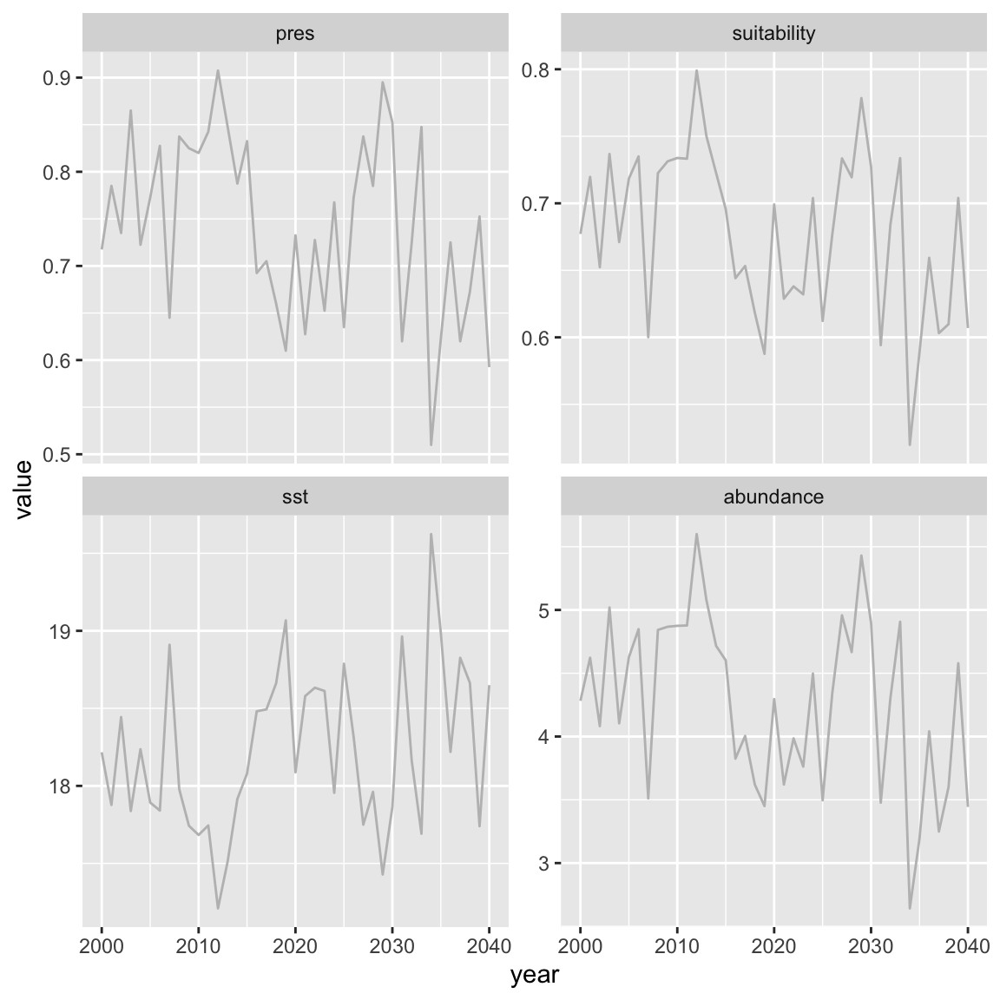
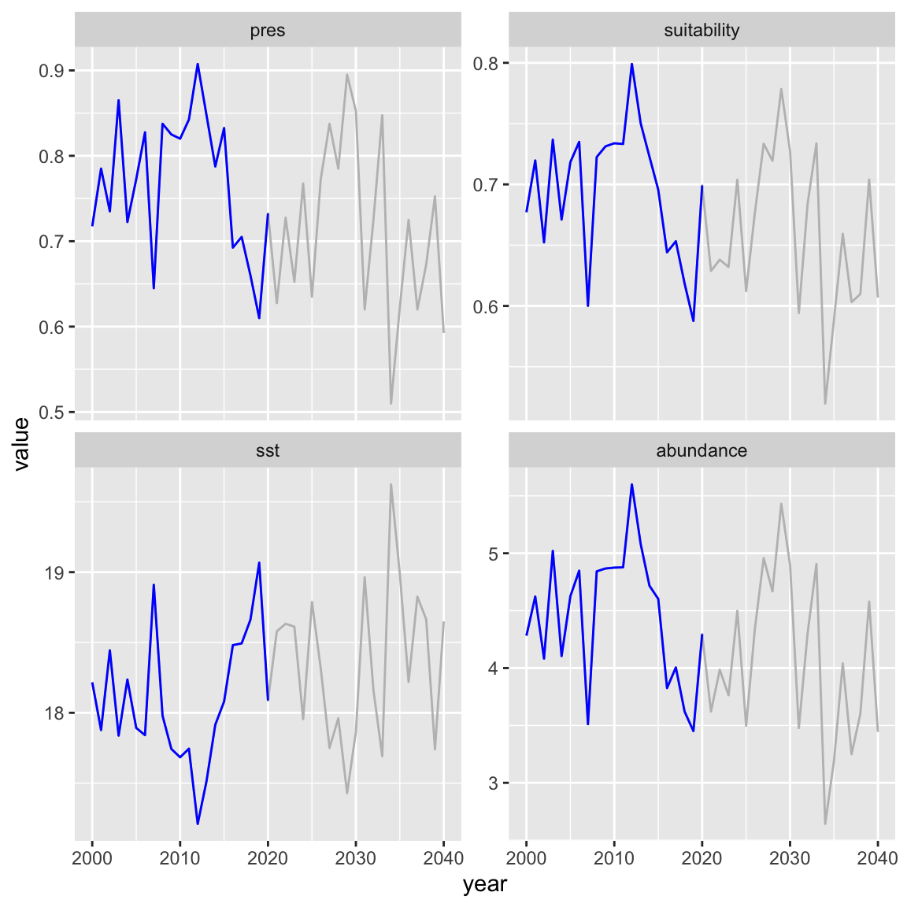
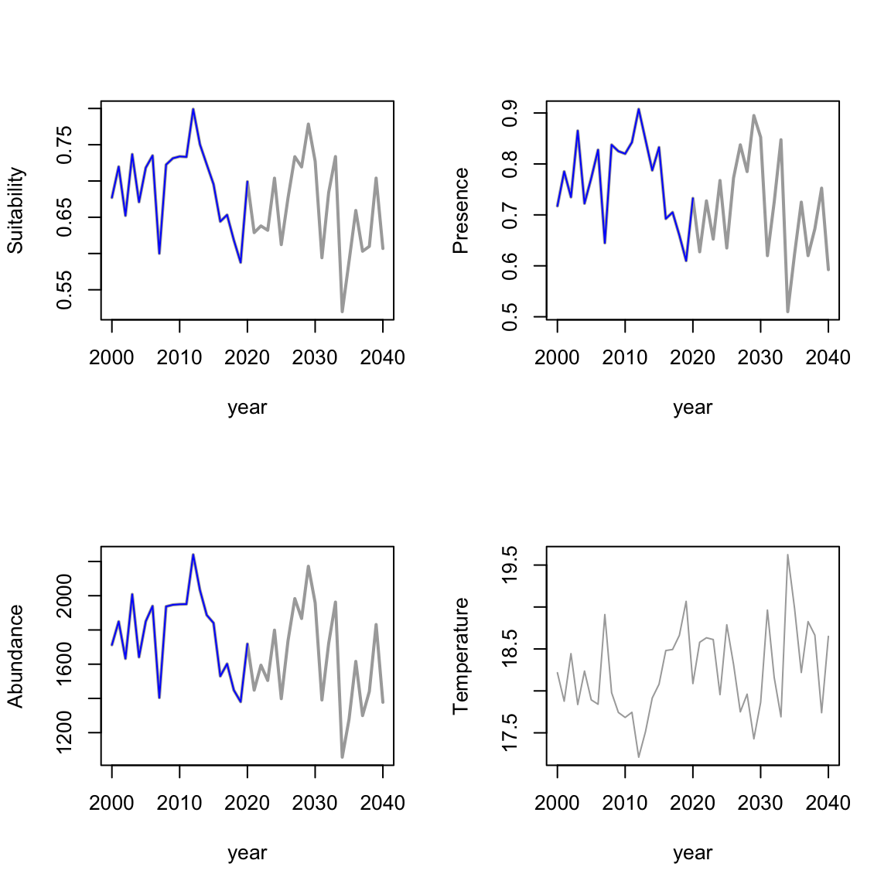
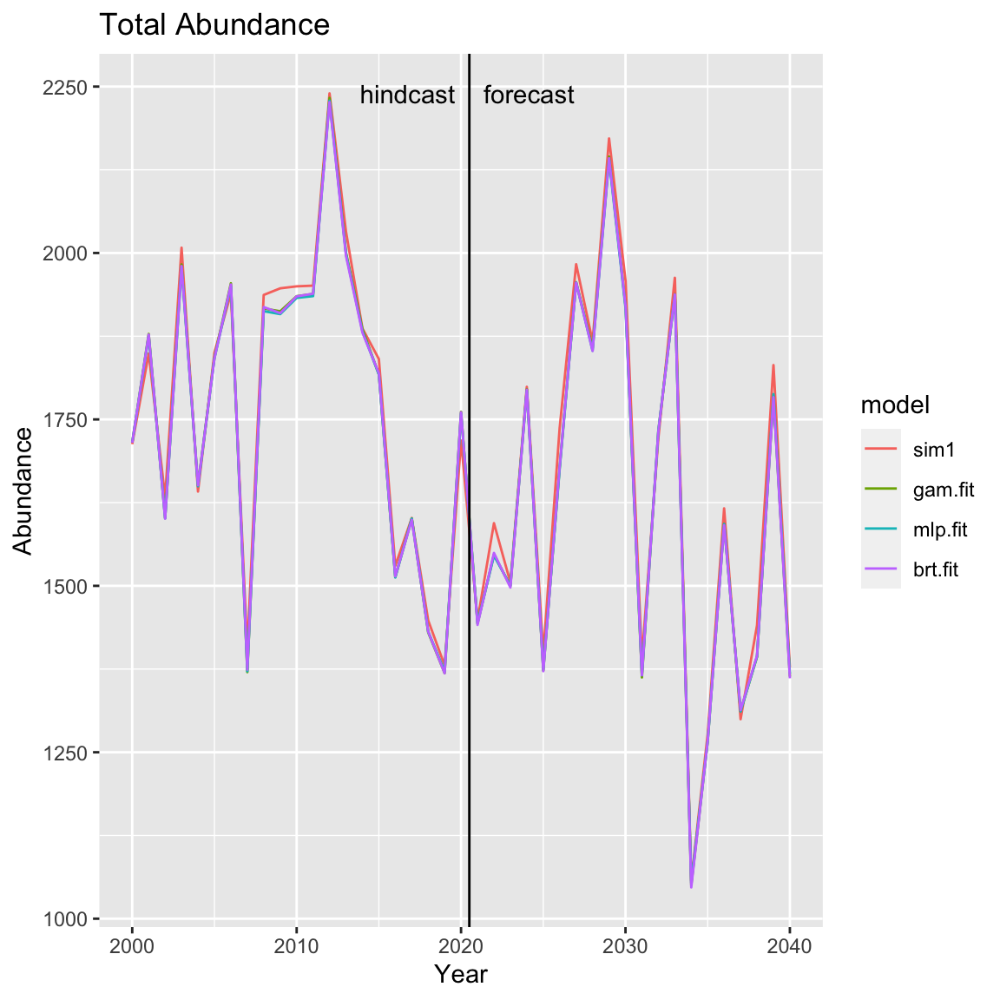
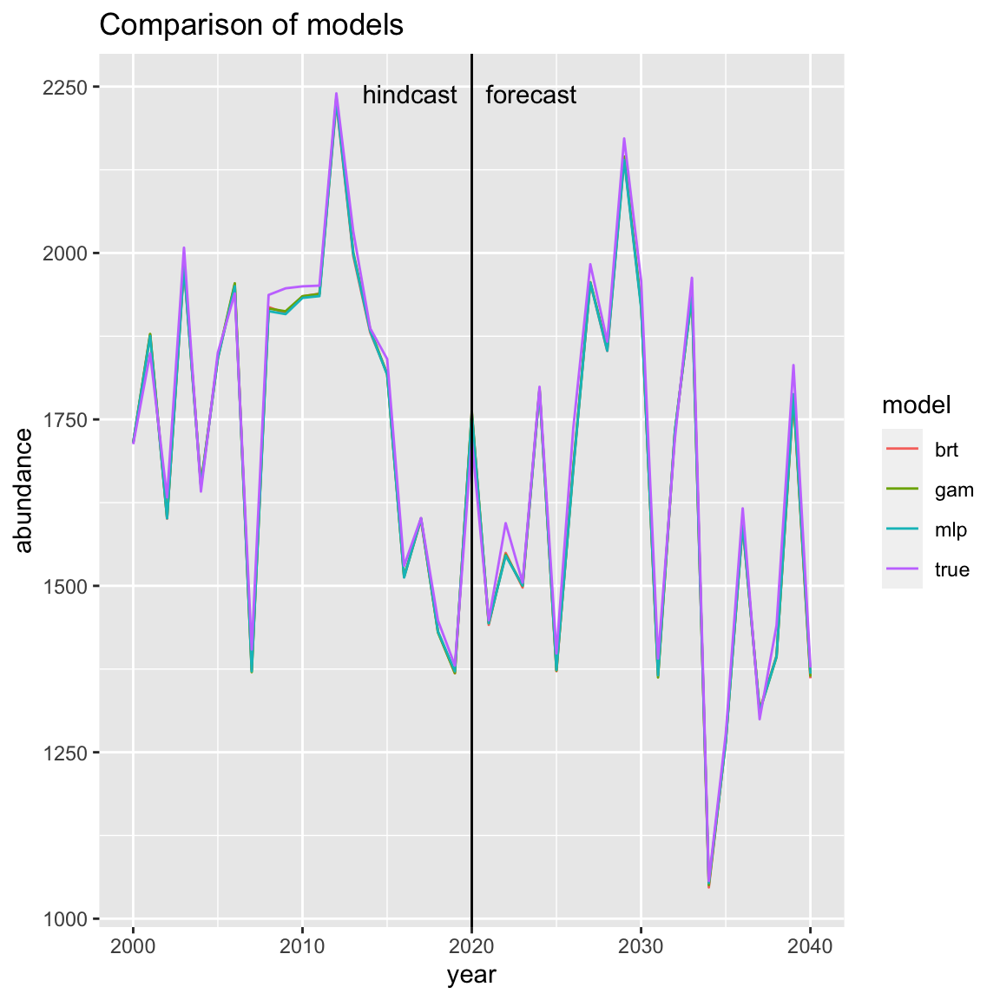
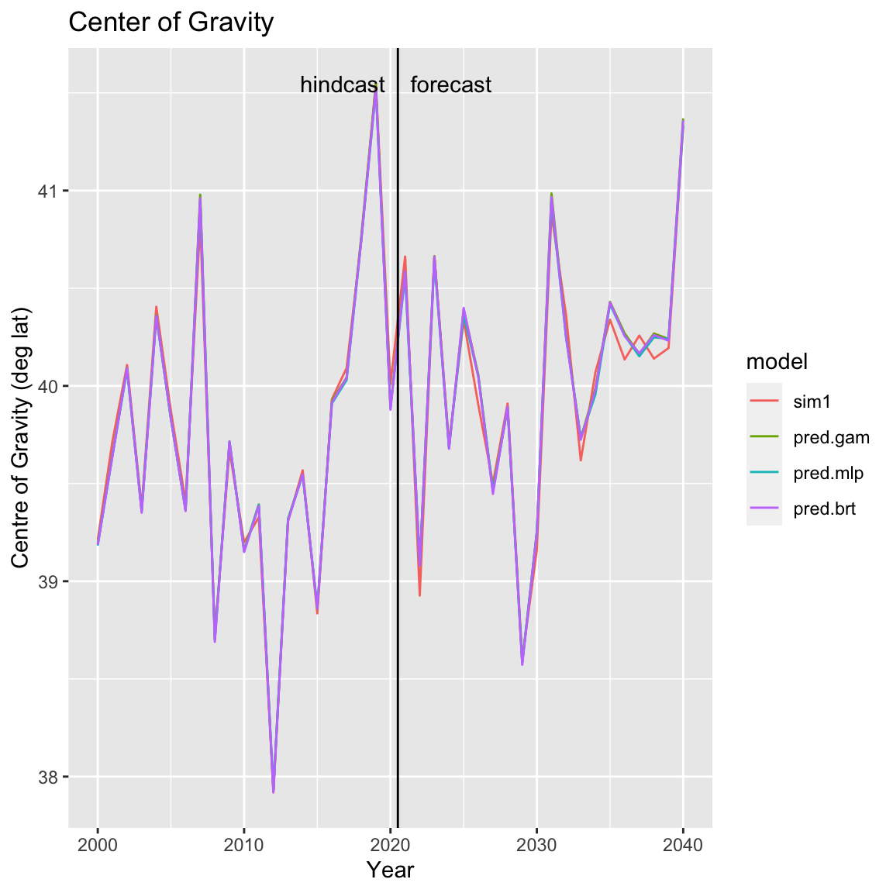
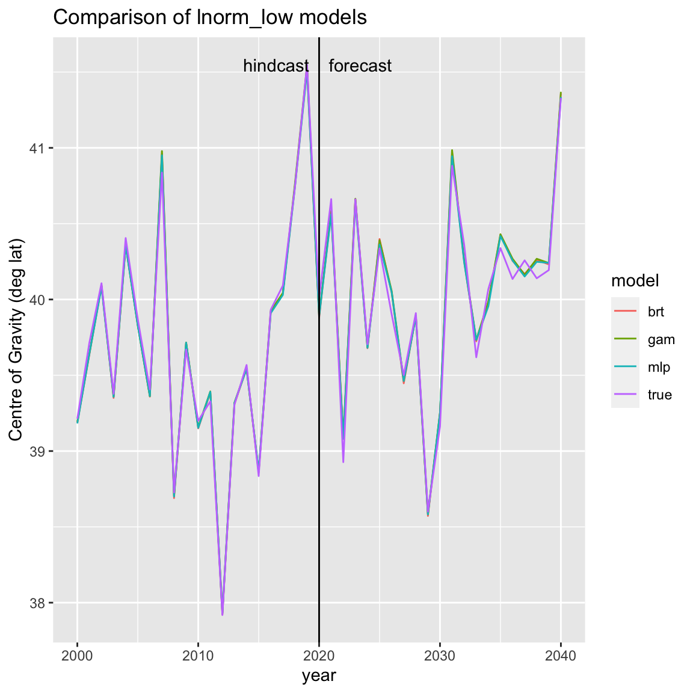
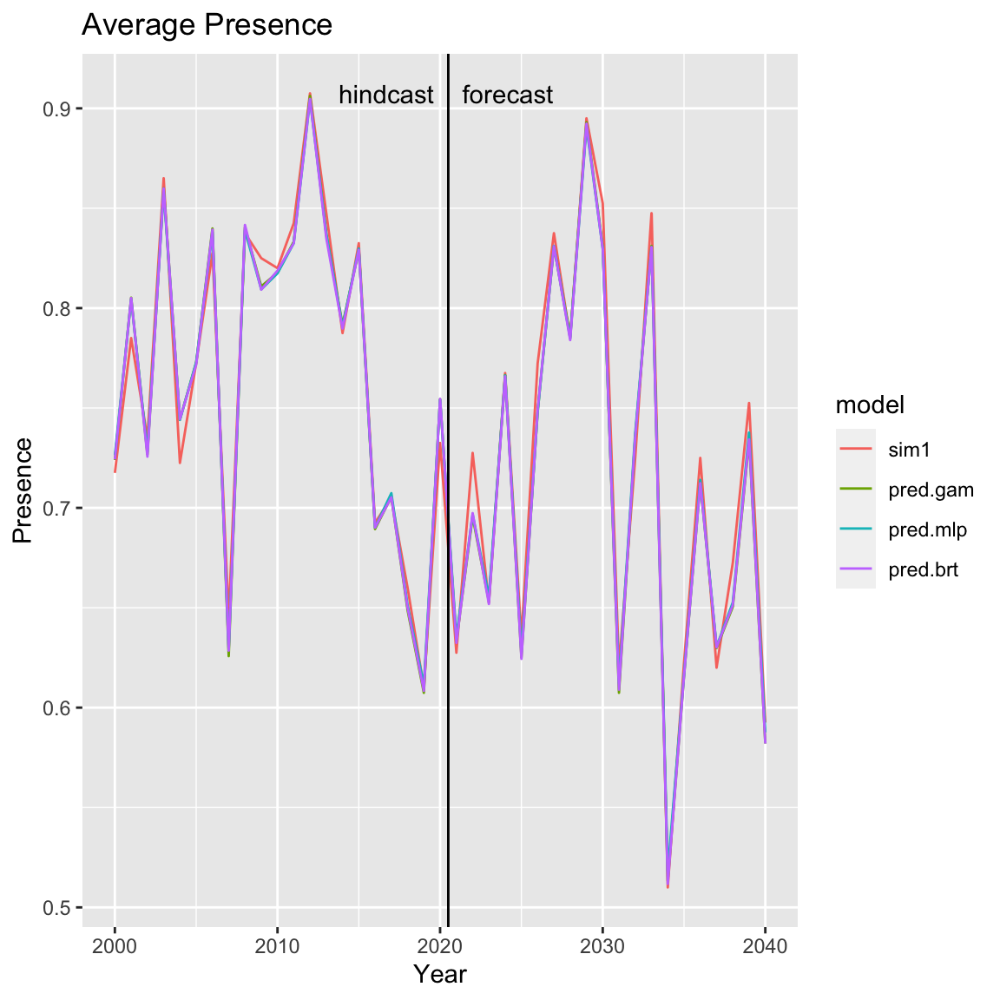
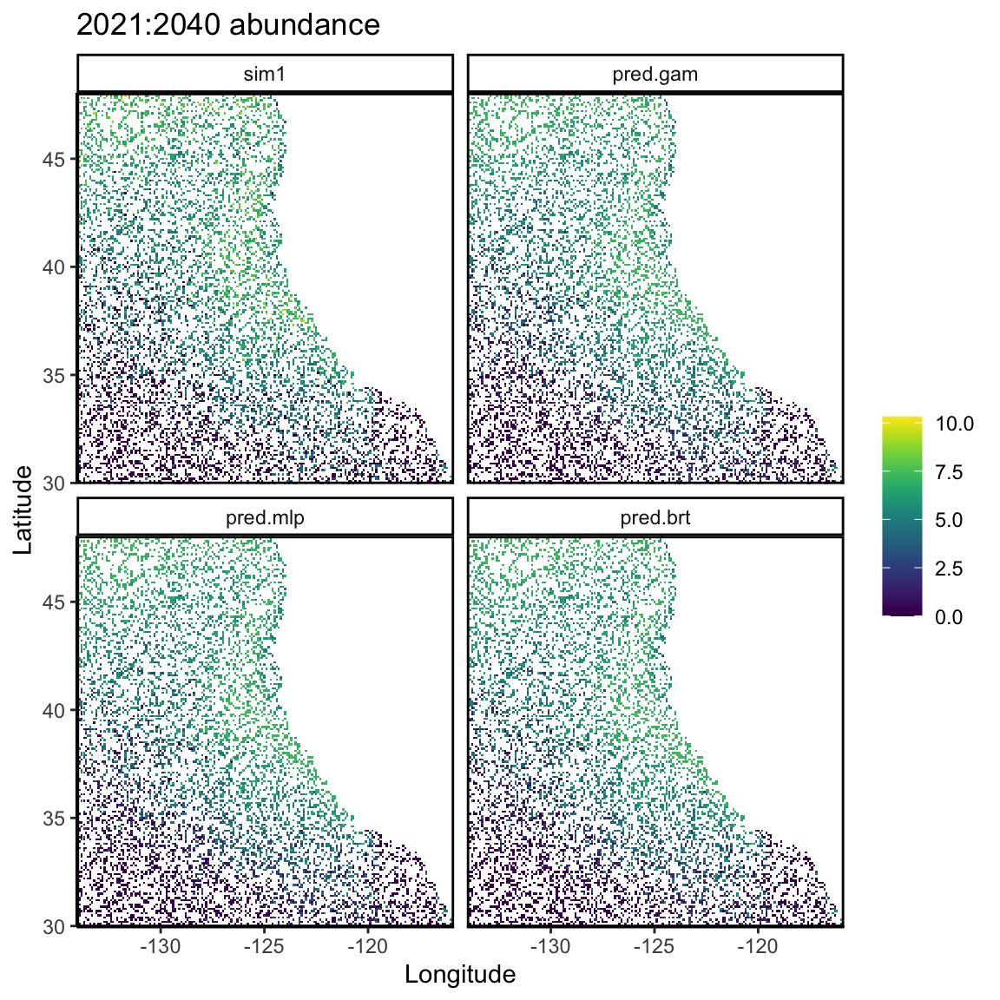
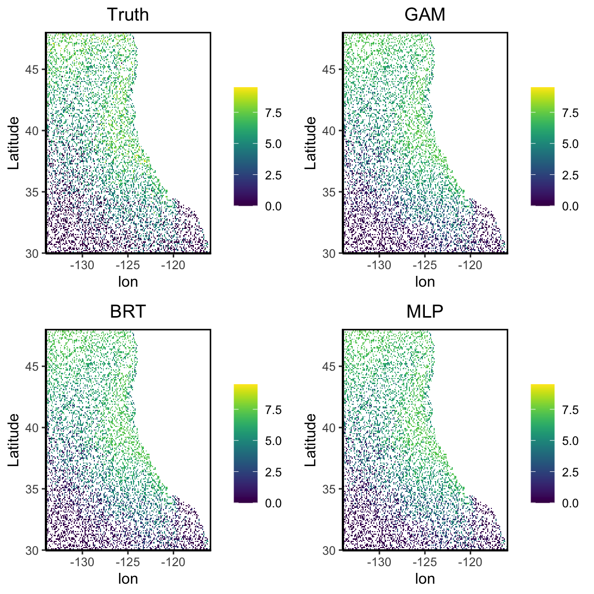

Plotting.RmdThis vignette shows how to make plots of OMs (simulated rasters of environmental variables and species abundances) and SDMs (fitted species distribution models) using the WRAP package.
WRAP includes the following plotting functions
plot() Plot yearly averages of the variables in an OM or POMplot_cog() Center of gravity for each year for OMs, SDMs and POMsplot_abund() Total abundance for each year for OMs, SDMs and POMsplot_grid() Grid of abundance for one or a range of years for OMs, SDMs and POMsplot_pres() Average presence for each year for OMs, SDMs and POMsThis vignette will show the WRAP functions and also show you how to make the plots from your own code.
library(WRAP)
For theses examples, we’ll use an OM from SimulateWorld_ROMS() which uses ROMS for the environmental fields. Set the parameters to the following for our simulated abundances and presence/absence grid. PA_shape specifies how enviro suitability determines species presence-absence. It takes values of “logistic”, “logistic_prev”, or “linear”. abund_enviro specifies abundance relationship when presence=1. It can be “lnorm_low”, “lnorm_high”, or “poisson”.
abund_enviro <- "lnorm_low" PA_shape <- "logistic"
Simulate species abundances:
sim1 <- SimulateWorld_ROMS(PA_shape = PA_shape, abund_enviro = abund_enviro, roms.years = 2000:2040)
Printing the output will show you basic information about the simulation. This information is in sim1$meta.
sim1 ## Simulated species abundance and suitability from WRAP version 1.5 and function SimulateWorld_ROMS ## covariates: sst ## grid.dimensions: 181, 186, 33666 (nrow, ncol, cells) ## grid.resolution 0.0994623655913978, 0.0994475138121547 (x, y) ## grid.extent -134, -115.5, 30, 48 (xmin, xmax, ymin, ymax) ## grid.units: degree ## time.extent: 2000 to 2040 year
Get the yearly means of the variables in an OM model.
plot(sim1, start.forecast.year=2020)

Here is raw code to make the same plot.
library(dplyr) #for the %>% pipe year_mean <- sim1$grid %>% aggregate(.~year, ., FUN="mean") %>% reshape2::melt(., id.vars=c("year"), measure.vars=c("pres", "suitability", "sst", "abundance"), variable.name="variable", value.name="value") year_mean$date <- as.Date(paste(year_mean$year, "01-01", sep="-"))
Plot. Blue is the training data and grey is the testing (forecast) data.
ggplot(year_mean, aes(x=date, y=value)) + geom_line(col="grey") + geom_line(aes(x=date, y=value), col="blue", subset(year_mean, year<=2020)) + facet_wrap(~variable, scales = "free_y") + xlab("year")

Here is an example without ggplot().
#All Years dat <- sim1$grid par(mfrow=c(2,2)) plot(aggregate(suitability~year,dat,FUN="mean"),type="l", lwd=2, ylab="Suitability",col="dark grey") lines(aggregate(suitability~year,dat[dat$year<=2020,],FUN="mean"),col="blue") plot(aggregate(pres~year,dat,FUN="mean"),type="l", lwd=2,ylab="Presence",col="dark grey") lines(aggregate(pres~year,dat[dat$year<=2020,],FUN="mean"),col="blue") plot(aggregate(abundance~year,dat,FUN="sum"),type="l", lwd=2,ylab="Abundance", col="dark grey") lines(aggregate(abundance~year,dat[dat$year<=2020,],FUN="sum"),col="blue") plot(aggregate(sst~year,dat,FUN="mean"),type="l",ylab="Temperature", col="dark grey")

We will fit GAM, BRT and MLP SDM models to the simulated grids. The default fitting period is years prior to 2021 (start.forecast.year=2021).
The function plot_abund() will plot the total abundances of the true data (from simulation) and the fitted models. The functions works on OMs (from the simulation functions), SDMs (from the fitting functions), and POMs (from the prediction function).
plot_abund(sim1, gam.fit, mlp.fit, brt.fit) ## getting prediction with gam.fit ## getting prediction with mlp.fit ## getting prediction with brt.fit

# You can also pass in predictions, which would be faster
Here is how to compute these abundance plots without plot_abund. First we create a data frame of the abundance predictions and true abundance.
pred.gam <- predict(sim1, sdm=gam.fit) pred.brt <- predict(sim1, sdm=brt.fit) pred.mlp <- predict(sim1, sdm=mlp.fit) # Assemble into a data frame nr <- nrow(pred.gam) pred.all <- rbind(pred.gam, pred.brt, pred.mlp) pred.all$model <- c(rep("gam", nr), rep("brt", nr), rep("mlp", nr))
# sum up the abundance predictions across cells by year # model col is the model abund <- aggregate(pred~year+model, pred.all, FUN="sum") colnames(abund) <- c("year", "model", "abundance") # Add true abundance x <- sim1$grid if (sim1$meta$abund_enviro == "poisson") x$abundance <- round(x$abundance) tmp <- aggregate(abundance~year, x, FUN="sum") tmp$model <- "true" tmp <- tmp[,c("year", "model", "abundance")] abund <- rbind(abund, tmp)
Next we plot
p <- ggplot(abund, aes(x=year, y=abundance, color=model)) + geom_line() + ggtitle("Comparison of models") + geom_vline(xintercept=2020) + annotate("text", x=2020, y=max(abund$abundance), label=" forecast", hjust=0) + annotate("text", x=2020, y=max(abund$abundance), label="hindcast ", hjust=1) p

The function plot_cog() will plot the center of gravity of OMs (from simulations) and fitted models. If you pass in a fitted object (SDM), plot_cog() will run predict() on that object or you can pass in a predict object (POM) returned by predict() if you already have that. The latter will be faster since the plotting doesn’t need to rerun predict(). You can pass in any combination of OMs, SDMs, and POMs.
plot_cog(sim1, pred.gam, pred.mlp, pred.brt)

# You can also pass in SDMs # plot_cog(sim1, gam.fit, mlp.fit, brt.fit)
Here is how to compute these COG plots without plot_cog. First we create a data frame of the COG predictions and true abundance.
# First compute the true cog library(dplyr) cog_lat <- x %>% group_by(year) %>% summarize(cog=weighted.mean(x=lat, w=abundance)) cog_lat <- cbind(model="true", cog_lat, stringsAsFactors = FALSE) # Now add the model cogs tmp <- pred.all %>% group_by(model, year) %>% summarize(cog=weighted.mean(x=lat, w=pred)) # dplyr uses tibbles and they return a matrix when you use rbind(). # so use cog_lat <- dplyr::bind_rows(cog_lat, tmp)
cog_lat is now a data frame with the center of gravity and a model column for the model (or true).
p <- ggplot(cog_lat, aes(x=year, y=cog, color=model)) + geom_line() + ggtitle("Comparison of lnorm_low models") + ylab("Centre of Gravity (deg lat)") + geom_vline(xintercept=2020) + annotate("text", x=2020, y=max(cog_lat$cog), label=" forecast", hjust=0) + annotate("text", x=2020, y=max(cog_lat$cog), label="hindcast ", hjust=1) p

The function plot_pres() will plot average presence by year. This function is similar to plot_abund().
plot_pres(sim1, pred.gam, pred.mlp, pred.brt)

# You can also pass in SDMs # plot_cog(sim1, gam.fit, mlp.fit, brt.fit)
These are point predictions for individual cells. Since there are only 400 points per year for this simulation, it will look sparse if we only plot one year. We will plot 20 years, 2021 to 2040. Note plot_grid() works with any combination of OM, SDM and POM objects, but if SDMs are included then the first argument must be the OM for which predictions will be made from the SDM.
plot_grid(sim1, year=2021:2040, pred.gam, pred.mlp, pred.brt)

# You can also pass in SDMs but the predictions will be computed (slow) # plot_grid(sim1, year=2021:2040, gam.fit, mlp.fit, brt.fit)
Here is how you could make the plot directly.
#Future uscale <- 9.5 Y <- 2021:2040 x <- subset(sim1$grid, year%in%Y) #Truth p1 <- ggplot(x, aes(x=lon, y=lat))+ geom_tile(aes(fill=abundance)) + theme_classic() + ggtitle("Truth")+ labs(y="Latitude") + scale_x_continuous(expand = c(0, 0)) + scale_y_continuous( expand = c(0, 0)) + theme(legend.title=element_blank(), plot.title = element_text(hjust=0.5), panel.border = element_rect(colour = "black", fill=NA, size=1)) + viridis::scale_fill_viridis(limits=c(0, uscale)) #Gam x <- subset(pred.all, year%in%Y & model=="gam") p2 <- ggplot(x, aes(lon,lat))+ geom_tile(aes(fill=pred)) + theme_classic() + ggtitle("GAM")+ labs(y="Latitude") + scale_x_continuous(expand = c(0, 0)) + scale_y_continuous( expand = c(0, 0)) + theme(legend.title=element_blank(), plot.title = element_text(hjust=0.5), panel.border = element_rect(colour = "black", fill=NA, size=1)) + viridis::scale_fill_viridis(limits=c(0, uscale)) #BRT x <- subset(pred.all, year%in%Y & model=="brt") p3 <- ggplot(x, aes(lon,lat))+ geom_tile(aes(fill=pred)) + theme_classic() + ggtitle("BRT")+ labs(y="Latitude") + scale_x_continuous(expand = c(0, 0)) + scale_y_continuous( expand = c(0, 0)) + theme(legend.title=element_blank(), plot.title = element_text(hjust=0.5), panel.border = element_rect(colour = "black", fill=NA, size=1)) + viridis::scale_fill_viridis(limits=c(0, uscale)) #Gam x <- subset(pred.all, year%in%Y & model=="mlp") p4 <- ggplot(x, aes(lon,lat))+ geom_tile(aes(fill=pred)) + theme_classic() + ggtitle("MLP")+ labs(y="Latitude") + scale_x_continuous(expand = c(0, 0)) + scale_y_continuous( expand = c(0, 0)) + theme(legend.title=element_blank(), plot.title = element_text(hjust=0.5), panel.border = element_rect(colour = "black", fill=NA, size=1)) + viridis::scale_fill_viridis(limits=c(0, uscale)) gridExtra::grid.arrange(p1, p2, p3, p4, nrow=2)
